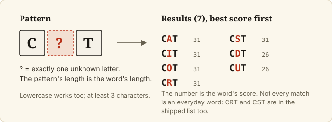
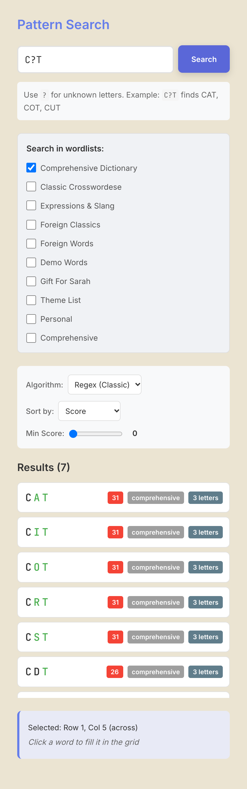

Find words by pattern
Goal
List the words that fit a pattern such as C?T, where ? stands for any single letter, and optionally put one
into your grid. This is the Search tool.
Prerequisites
- The app is running (Install on macOS).
Steps
1. Open Search and enter a pattern
Click Search in the left rail. Type a pattern in the field (Enter pattern (e.g., ?I?A)). Use letters
for the squares you know and ? for each unknown letter. The pattern must be at least 3 characters; a
shorter one shows Pattern must be at least 3 characters. Lowercase is accepted and treated as uppercase.


2. Choose which word lists to search
Under Search in wordlists:, tick the lists to use. Comprehensive Dictionary is ticked by default. With nothing
ticked, the app shows Select at least one word list and the Search button is disabled. To add your own
list, see Use your own word lists.
3. Search and read the results
Click Search. Results appear under Results (N), each with its score, the list it came from, and its
length. A search returns at most 50 words. Sort by (Score, Alphabetical, Length) and Min Score take
effect when you click Search, so change them first, or change them and click Search again. If nothing fits
you will see No matching words found.


Scores come from the word list. The shipped list is large and includes obscure entries and abbreviations, so a high result count does not mean every result is a word you would put in a puzzle.
4. Put a result into the grid
Select the square where the word should start (and press Enter to choose across or down), then click a
result. The word is written into the grid from that square in the selected direction. It stops at a black
square or the grid edge and leaves theme-locked letters as they are.
5. Choose the algorithm (optional)
Algorithm offers Regex (Classic) (the default) and Trie (Fast). Both take the same patterns, so you
can leave it on the default.
Final Result
A list of matching words with scores, and, if you clicked one, that word written into the grid.
Next Steps
- Fill the rest automatically: Autofill a grid.
- All Search controls: Web app reference.